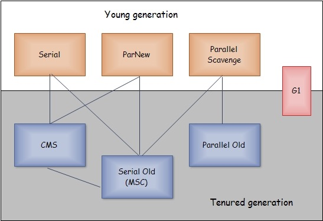

前面对垃圾回收机制和回收算法进行了讲解。
这里我们将要讲垃圾回收的具体实现：垃圾收集器。
不同版本的java虚拟机，其垃圾收集器的实现不一样，这里我们的内容都是基于hotspot虚拟机。
Hotspot包含的所有收集器如下：
新生代：Serial、ParNew、Parallel Scavenge
老年代：Serial Old、Parallel Old、CMS
G1：包含新生代和老年代

一、垃圾收集器介绍
1、Serial
新生代单线程收集器，标记和清理都是单线程，在进行垃圾收集时必须暂停其它所有的工作线程，直到收集结束。
复制算法，暂停所有用户的线程。
Serial优点是简单高效，对于限定单个CPU的环境来说，没有线程交互的开销。
Serial收集器在客户端模式下是一个比较好的选择。
2、ParNew
新生代收集器，Serial的多线程版本。
除了使用多线程收集外，和Serial相比没有很大的区别。
同样是采用复制算法。
在多核CPU环境下有着比Serial更好的表现，但在单CPU环境不会比Serial效果更好。
常常与CMS配合使用，ParNew新生代，CMS老年代。
3、Parallel Scavenge
新生代、并行收集器。
采用复制算法。
追求高吞吐量，吞吐量=用户线程时间/(用户线程时间+GC线程时间)。
高呑吐量，高效利用CPU，尽快完成程序的运算任务，适合后台应用等对交互相应要求不高的场景；
4、Serial Old
Serial收集器的老年代版本，单线程。
使用标记-整理算法。
主要三大用途：一是client模式下的虚拟机使用；二是服务器模式下与Parallel Scavenge搭配使用；三是服务器模式下作为CMS的后备预案。
5、Parallel Old
Parallel Scavenge收集器的老年代版本，并行收集器，吞吐量优先。
使用标记-整理算法。
6、CMS
老年代收集器。
高并发、低停顿，追求最短GC回收停顿时间，cpu占用比较高，响应时间快。
适用于用户交互的服务端应用。
采用标记-清除算法。
CMS缺点：
(1)由于CMS并发清理时，用户线程还在运行，在这个过程中，还会不断的有新的垃圾产生，这部分垃圾无法在本次收集中处理掉。
称为“浮动垃圾”。
因此CMS收集器不能像其它收集器一样，等老年代满了再进行收集。需要预留一部分空间供并发收集时用户程序使用。
要是CMS运行期间、预留的内存无法满足使用，虚拟机会启动后备预案：临时启用Serial Old收集器来进行老年代垃圾收集。
(2)对CPU资源太敏感，虽然在并发标记阶段用户线程没有暂停，但是由于收集器占用了一部分CPU资源，导致程序的响应速度变慢,总呑吐量会降低。
(3)由于CMS收集器是基于“标记-清除”算法的，前面说过这个算法会导致大量的空间碎片的产生，一旦空间碎片过多，大对象就没办法给其分配内存,那么即使内存还有剩余空间容纳这个大对象，但是却没有连续的足够大的空间放下这个对象，所以虚拟机就会触发一次Full GC。这个问题的解决是通过控制参数-XX:+UseCMSCompactAtFullCollection，用于在CMS垃圾收集器顶不住要进行FullGC的时候开启空间碎片的合并整理过程。
7、G1
面向服务端应用的收集器。
可以替换掉CMS收集器。
与前几个收集器相比，G1收集器有以下特点：
(1)并行与并发
(2)分代收集,仍然保留了分代的概念
(3)空间整合:整体上属于“标记-整理”算法，不会导致空间碎片
(4)可预测的停顿:比CMS更先进的地方在于能让使用者明确指定一个长度为M毫秒的时间片段内，消耗在垃圾收集上的时间不得超过N毫秒
G1收集器将Java堆划分为多个大小相等的Region（独立区域），新生代与老年代都是一部分Region的集合，G1的收集范围则是这一个个Region。
G1的工作过程如下：
初始标记（Initial Marking）
并发标记（Concurrent Marking）
最终标记（Final Marking）
筛选回收（Live Data Counting and Evacuation）
二、垃圾收集器参数设置
| 参数 | 描述 |
|---|---|
| -XX:+UseSerialGC | Jvm运行在Client模式下的默认值，打开此开关后，使用Serial + Serial Old的收集器组合进行内存回收 |
| -XX:+UseParNewGC | 打开此开关后，使用ParNew + Serial Old的收集器进行垃圾回收 |
| -XX:+UseConcMarkSweepGC | 使用ParNew + CMS + Serial Old的收集器组合进行内存回收，Serial Old作为CMS出现“Concurrent Mode Failure”失败后的后备收集器使用。 |
| -XX:+UseParallelGC | Jvm运行在Server模式下的默认值，打开此开关后，使用Parallel Scavenge + Serial Old的收集器组合进行回收 |
| -XX:+UseParallelOldGC | 使用Parallel Scavenge + Parallel Old的收集器组合进行回收 |
| -XX:SurvivorRatio | 新生代中Eden区域与Survivor区域的容量比值，默认为8，代表Eden:Subrvivor = 8:1 |
| -XX:PretenureSizeThreshold | 直接晋升到老年代对象的大小，设置这个参数后，大于这个参数的对象将直接在老年代分配 |
| -XX:MaxTenuringThreshold | 晋升到老年代的对象年龄，每次Minor GC之后，年龄就加1，当超过这个参数的值时进入老年代 |
| -XX:UseAdaptiveSizePolicy | 动态调整java堆中各个区域的大小以及进入老年代的年龄 |
| -XX:+HandlePromotionFailure | 是否允许新生代收集担保，进行一次minor gc后, 另一块Survivor空间不足时，将直接会在老年代中保留 |
| -XX:ParallelGCThreads | 设置并行GC进行内存回收的线程数 |
| -XX:GCTimeRatio | GC时间占总时间的比列，默认值为99，即允许1%的GC时间，仅在使用Parallel Scavenge 收集器时有效 |
| -XX:MaxGCPauseMillis | 设置GC的最大停顿时间，在Parallel Scavenge 收集器下有效 |
| -XX:CMSInitiatingOccupancyFraction | 设置CMS收集器在老年代空间被使用多少后出发垃圾收集，默认值为68%，仅在CMS收集器时有效，-XX:CMSInitiatingOccupancyFraction=70 |
| -XX:+UseCMSCompactAtFullCollection | 由于CMS收集器会产生碎片，此参数设置在垃圾收集器后是否需要一次内存碎片整理过程，仅在CMS收集器时有效 |
| -XX:+CMSFullGCBeforeCompaction | 设置CMS收集器在进行若干次垃圾收集后再进行一次内存碎片整理过程，通常与UseCMSCompactAtFullCollection参数一起使用 |
| -XX:+UseFastAccessorMethods | 原始类型优化 |
| -XX:+DisableExplicitGC | 是否关闭手动System.gc |
| -XX:+CMSParallelRemarkEnabled | 降低标记停顿 |
| -XX:LargePageSizeInBytes | 内存页的大小不可设置过大，会影响Perm的大小，-XX:LargePageSizeInBytes=128m |
| -XX:+UseG1GC | 使用G1回收器 |
| -XX:GCPauseIntervalMillis | 设置停顿间隔时间 |
三、组合方式
| header 1 | 新生代GC方式 | 老年代和持久代GC方式 |
|---|---|---|
| -XX:+UseSerialGC | Serial 串行GC | Serial Old 串行GC |
| -XX:+UseParallelGC | Parallel Scavenge 并行回收GC | Serial Old 并行GC |
| -XX:+UseConcMarkSweepGC | ParNew 并行GC | CMS 并发GC,当出现“Concurrent Mode Failure”时,采用Serial Old 串行GC |
| -XX:+UseParNewGC | ParNew 并行GC | Serial Old 串行GC |
| -XX:+UseParallelOldGC | Parallel Scavenge 并行回收GC | Parallel Old 并行GC |
| -XX:+UseConcMarkSweepGC和-XX:+UseParNewGC | Serial 串行GC | CMS 并发GC,当出现“Concurrent Mode Failure”时采用Serial Old 串行GC |